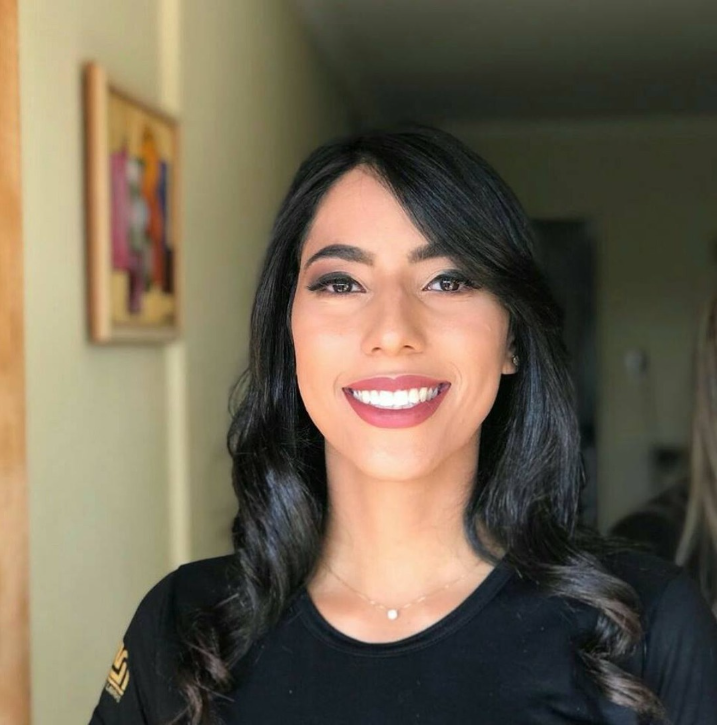

Seja para reeducação alimentar, hipertrofia ou acompanhamento para uso de canetas emagrecedoras: alcance resultados reais que você ama e consegue manter.
Atendimento Online para todo o Brasil e Presencial em Bom Sucesso - MG.
Quero Agendar Minha ConsultaUm acompanhamento descomplicado, desenhado para se encaixar na sua rotina, seja no formato online ou presencial.
Uma conversa aprofundada sobre sua rotina, histórico de saúde, gostos alimentares e exames. O foco aqui é entender você.
Nada de dietas de gaveta. Você recebe um planejamento alimentar feito sob medida, com alimentos acessíveis e que você gosta.
Surgiu uma dúvida no mercado ou em um restaurante? Você terá contato direto comigo para garantir que não perca o foco.

Olá! Sou Ingrid Morais (CRN9: 22373), apaixonada por promover saúde e bem-estar de forma leve e descomplicada. Acredito que a alimentação consciente é a chave para uma vida plena, e meu objetivo é guiá-lo(a) nessa jornada, respeitando sua individualidade e seus hábitos.
Sou graduada em Nutrição pela Universidade Federal de Lavras e pós-graduada em Fitoterapia e Ortomolecular. Minha missão é desmistificar a nutrição, mostrando que é possível comer bem, com prazer e sem restrições desnecessárias (a famosa "dieta da selva" não entra aqui!).
Não acredito em soluções milagrosas. Trabalho com a construção de hábitos saudáveis e sustentáveis, aliando ciência e escuta ativa para otimizar seus resultados.
Perda de peso consciente e duradoura. Excelente para pacientes que buscam reverter o efeito sanfona ou que utilizam suporte medicamentoso (canetas emagrecedoras), focando na preservação da massa muscular.
Aprenda a fazer escolhas inteligentes, perca o medo da comida e desenvolva autonomia para uma vida mais leve e saudável a longo prazo.
Planos focados na melhora da sua energia, ganho de massa magra, disposição e qualidade de vida, utilizando a nutrição ortomolecular a seu favor.
O que dizem os pacientes que já transformaram suas rotinas:
"Ingrid ótima nutricionista, ela cria a dieta conforme a nossa condição, assim fica mais fácil de seguir. Gostei demais, já passei por várias nutricionistas e não deram certo. Com a dieta criada por Ingrid se tornou mais fácil ter uma alimentação saudável. E toda família entrou no ritmo."
- Uanda Senar"Ingrid Morais representa a excelência na área, com domínio e amplo conhecimento técnico atrelado a um atendimento de alto padrão. O resultado é ótimo e definitivo. Amei❤️❤️"
- Romilda"Excelente profissional. Preocupada, atenciosa, se importa de verdade com seus pacientes e sua saúde. Super recomendo."
- Adrielly AndradeInsira seus dados abaixo para calcular seu Índice de Massa Corporal (IMC) e entender como a nutrição personalizada pode ajudar.
Digite seu peso e altura para ver o resultado e recomendações.
Entre em contato para agendar sua consulta ou tirar suas dúvidas sobre o acompanhamento online ou presencial.
WhatsApp: (35) 9 9119-6419
Instagram: @ingridmoraisnutri
E-mail: ingridmoraisb@gmail.com
Consultório Presencial: R. Amâncio Castanheira, 218, Bom Sucesso - MG, 37220-000